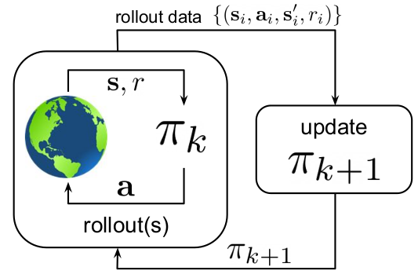
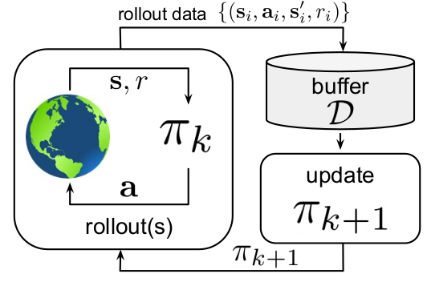

Reinforcement learning has started being implemented in a variety of fields such as robotics, text mining, trade execution, healthcare, games and other fields. The novelty of reinforcement learning in comparison to other techniques is that it is highly adaptable as well as it can learn complex complex interactions through exploration.
Reinforcement Learning at its core attempts to map states to actions which maximize a numerical reward. Unlike supervised learning, which is trained by comparing labelled data to predicted data, and un-supervised learning, which attempts to group unlabelled data together, reinforcement learning learns by maximizing its accumulative long term reward by interacting with the environment.
A Markov Decision Process provides a mathematical framework which can be used to model decision making and consists of the following:
State (s): a tensor that can contain a set of vectors and/or scalars which are within the set \mathcal{S^+}\mathcal{S^+} is a set of all possible states including terminal states, whereas \mathcal{S} is a set of all possible states that is not including terminal states.. The state space can either be continuous or discrete. For discrete states, the set \mathcal{S^+} must contain a finite set of numbers. If the set \mathcal{S^+} contains a non-finite set of numbers, then the state space is continuous.
Reward (R): a scalar that represents a reward for taking the action a at state s
Action (a): a tensor that can contain a set of vectors and/or scalars which are within the set \mathcal{A}. The action space is continuous when the set \mathcal{A} contains a non finite set of numbers, else if it contains a finite set of numbers, then the action space if discrete.
State Transition (p(s'|s,a)): is the probability that the environment transitions from state s to state s' when taking the action a.
Environment: A scenario which accepts any of the possible actions from the set \mathcal{A} and returns a state (s) from within the set \mathcal{S^+} and also a reward.
Policy (\pi): a policy is a function which performs an action from a set of actions \mathcal{A} depending on a given state s.
Agent: consists of a policy (\pi) and an algorithm which attempts to update the policy to approach the optimal policy \pi^*.
Episode: A sequence of states and actions that start when time t is 0 to when it reaches its terminal state at time T.
Discounted Accumulate Reward (G_t): is a performance metric. A discounted performance metric is used to bound the sum to a finite value. Without the discount, for a continuing task with a final time step of T = \infty, the accumulative reward could be infinite. The agent will not be able to differentiate between a sub-optimal policy with a T = \infty and the optimal policy \pi^*. As 0 < \gamma < 1, G_t will be finite in the equation G_t = \sum_{i=0}^{T-t}{\gamma^i R_{t+i}}. This means there will be a difference between the sub-optimal policy and \pi^*.
The agent learns by interacting with the environment to find the optimal policy \pi^* which performs the action that earns the maximum reward.
On-Policy: learns from the experiences from the latest policy to update itself to a new policy

Off-Policy: typically learns from the experiences of previous policies by storing experiences into a buffer. The buffer is sampled to update the current policy

Offline: only uses data collected from other policies and does not further interact from the environment
Most reinforcement learning algorithms involve estimating the value functions from states or state-action pairs. A value function is the expected long term reward from the current time step t with the current state s_t to the end of the episode. V(s) = \mathbb{E}[G_t | s_t] = \mathbb{E}[R_t + \gamma R_{t+1} + \gamma^2 R_{t+2} + ... | s_t]
State Value Function (V(s)): estimates the accumulate discounted reward-to-go from the current state. Thus, the value function is also estimating what actions the policy will take and their rewards. A problem with V(s), is that when the policy \pi_k is updated to \pi_{k+1}, the value function is still estimating for \pi_k. If there are non-negligible differences between \pi_k and \pi_{k+1}, V(s) will produce inaccurate value predictions. To avoid this issue, the value function is usually updated more frequently than the policy.
Q-Value or State-Action Value Function (Q(s, a)): also estimates the discounted reward-to-go but with the state and action. When the action is used for estimation, the dimensionality is increased, meaning a decrease in sample efficiency.
The relationship between V(s) and Q(s,a) can be written as: V(s) = \sum_{a \in \mathcal{A}}{\pi(a|s) \cdot Q(s,a)}
The state value function is the probability of taking action a at state s multiplied by the Q-value for all possible actions.
The Q-value is the summation for possible states for s' of the probability of transitioning from state s to the next state s' when taking the action a multiplied by the reward plus the discounted state value function of state s'
Before diving in: if you haven’t encountered t-SNE before, here’s what you need to know about the math behind it.
The goal is to take a set of points in a high-dimensional space and find a faithful representation of those points
in a lower-dimensional space, typically the 2D plane. The algorithm is non-linear and adapts to the underlying
data, performing different transformations on different regions. Those differences can be a major source of
confusion.
This is the first paragraph of the article. Test a long — dash -- here it is.
Test for owner's possessive. Test for "quoting a passage." And another sentence. Or two. Some flopping fins; for
diving.
Here's a test of an inline equation c = a^2 + b^2. Also with configurable katex standards just
using inline '$' signs: $$x^2$$ And then there's a block equation:
We can also cite external publications. . We should also be testing footnotes
This will become a hoverable footnote. This will become a hoverable footnote. This will become a
hoverable footnote. This will become a hoverable footnote. This will become a hoverable footnote. This will
become a hoverable footnote. This will become a hoverable footnote. This will become a hoverable footnote.
. There are multiple footnotes, and they appear in the appendixGiven I have coded them
right. Also, here's math in a footnote: c = \sum_0^i{x}. Also, a citation. Box-ception! as well.